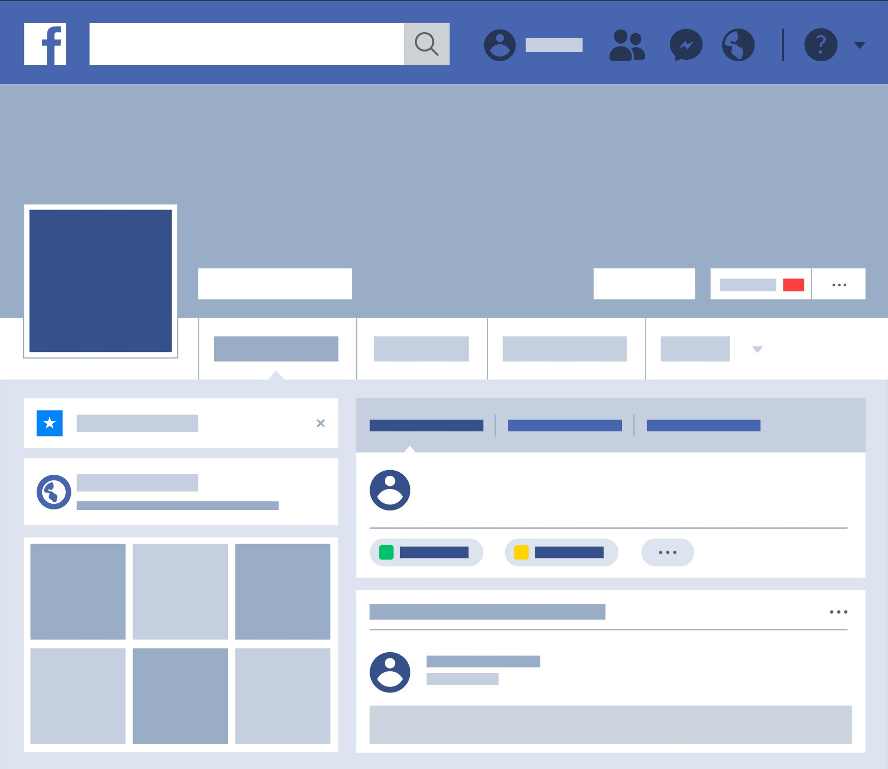

Our Social Media

We invite you to take a look at our social media and hit that follow button so that you can be more connected with us. Stay up-to-date about promotions, new drinks, and more!
We invite you to take a look at our social media and hit that follow button so that you can be more connected with us. Stay up-to-date about promotions, new drinks, and more!
